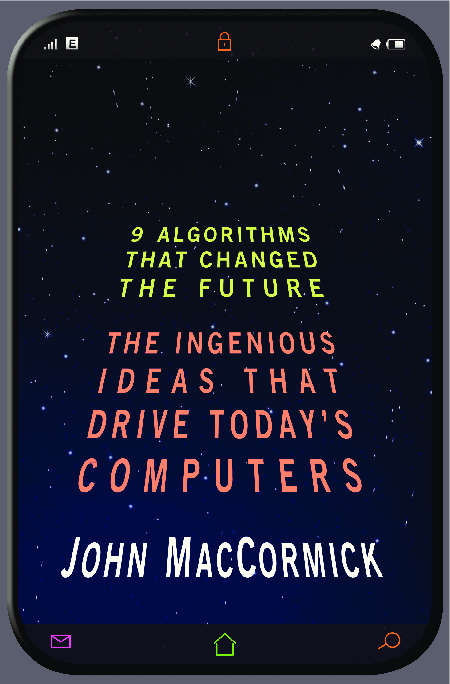

Nine Algorithms That Changed the Future: The Ingenious Ideas That Drive Today's Computers

What is this book about? It explains how your cell phone, laptop,
tablet, and other computers do the amazing things they do. How they
can search the entire web in a fraction of a second. How they can
transmit vast amounts of data over unreliable wireless connections,
without making a single error. How they can recognize your speech and
handwriting. And many others.
The book assumes no knowledge of computer science. It's designed
to be read and enjoyed by anyone who's curious about how our computing
devices manage to be so smart. Interested?
Please, peek
inside, or check out
the table of
contents. There's more good stuff at
the 9
Algorithms Facebook page, and the
book's official
page at Princeton University Press. If you want to buy it, 9
Algorithms is available as an eBook or hardcover from all the
usual suspects,
including Barnes
& Noble
and Amazon. And of course there's a YouTube video:
Some people were kind enough to say nice things about the book;
here are two of them:
Chuck Thacker, winner of the 2010 Turing Award—the
highest award in computer science—said: "This book is
for those who have wondered, 'What actually goes on in my computer?'
MacCormick clearly explains some of the algorithms used by hundreds
of millions of people daily. Not the simple algorithms like
arithmetic and sorting, but more complex things such as how to
determine the importance of web pages, if and when we are justified
in trusting a computer-mediated conversation with another person,
and the puzzling issue of what cannot be computed. I recommend it
highly."
Andrew Fitzgibbon, who created the Emmy-award-winning camera
software boujou, said: "It's been a long time since any
book has given me the excitement I remember from reading Hawking and
Feynman in my teens. This book does exactly that. It reminds me why
I love computer science. MacCormick's explanations are easy to
understand yet they tell the real story of how these algorithms
actually work. This is a book that deserves not just to be admired,
but celebrated."
Award from the Association of American Publishers
9 Algorithms received an Honorable Mention for the 2012
Award for Best Professional/Scholarly Book in Computing & Information
Sciences, awarded by the Association of American Publishers.
Translations
9 Algorithms has been translated (or in some cases, is
currently being translated) into the following eight languages:
traditional Chinese, simplified Chinese, Japanese, Korean, Russian,
Italian, Greek, and Turkish.
Media coverage
Media coverage of the book includes:
Review
in EE Times, by Clive Maxfield, April 3, 2012.
Featured on the Australian Broadcasting Corporation's national
radio program, Future Tense, in an episode called "The
Algorithm": web
page, mp3
audio.
Review in Financial World, by Diana Hunter, p45, April
2012: Html; PDF.
Review in SIAM News, March 2012 issue, by Ernest
Davis. Free excerpt; full
text available in print only at present; appears online
at SIAM News after 6-8
weeks.
Review in the journal Science, Volume 335, p1305, 16 March
2012: Stunningly Successful Solutions, by Paul
Curzon. Free excerpt;
full
text in HTML (requires
subscription); full
text in PDF (requires subscription).
Review in Nature Physics, Vol 8(2), February 2012, p105, by
Andreas
Trabesinger. Free
excerpt; Full
text (subscription required).
A
review by Brent Yorgey on his blog, The Math Less
Traveled, February 4, 2012.
Review in BBC Focus magazine, p103, February 2012, by Robert
Matthews. Free excerpt;
full
text (requires subscription).
Times
Higher Education’s Book of the Week in the January 26, 2012
edition (issue 2034), pages 52-53. Reviewed by John Gilbey.
Interview with Michael
"TechTalk" Kastler and Dave "Sparky" Saganaki on the WRLR radio show
and
podcast, TechTalk. January
21, 2012.
An article about algorithms in the Italian daily newspaper
Corriere Della Sera, written by me and translated by Maria
Sepa: the article,
entitled Gli
Algoritmi del Successo, appeared on page 7 of the La Lettura
section, on January 15, 2012.